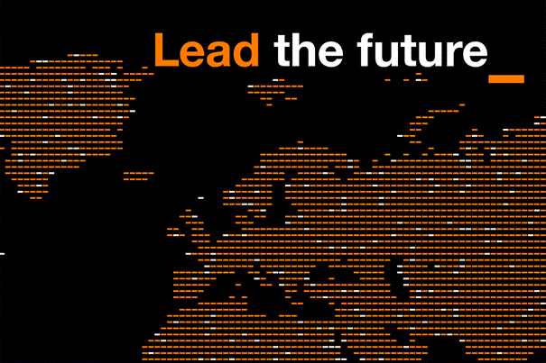

Dans le monde entier, en décembre 2024, Orange compte 291 millions de personnes (clients, professionnel, entreprises, etc) dans 26 pays. Que ce soit en Europe ou en Afrique. Également sous la marque Orange Business, ils sont l’un des leaders mondiaux des services de télécommunication pour les entreprises multinationales. L'entreprise compte plus de 127 000 salariés et font un chiffre d'affaires d'environ 40,3 milliards d'euros.
Leur but reste le même depuis 1929 : Rendre accessible leur technologie et leur besoins au plus de personnes possible dans le monde. Ils s'adaptent à chaque besoin des clients du tour du globe pour leur offrir une expérience optimale du côté internet, mais aussi du côté assistance.
Les réseaux télécoms constituent le socle des activités d'Orange. Chaque client , quel qu'il soit, a besoin de leur service. Pour répondre au usages des clients, Orange déploie des réseaux fiables, résilients, performants et sécurisés.
Dans le but de valoriser l'excellence d'Orange et de chercher une plus haute croissance en Europe, en Afrique et au Moyen-Orient ; ce projet s'appuie sur la mise en œuvre d'un nouveau modèle d'entreprise reposant sur la performance, l'excellence et la confiance.
